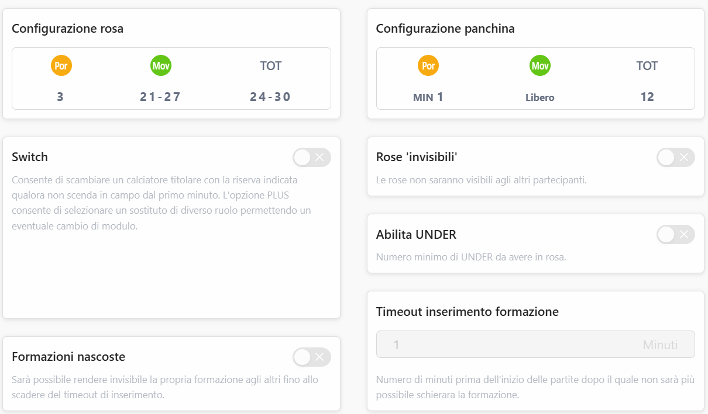
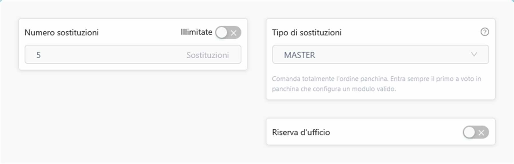
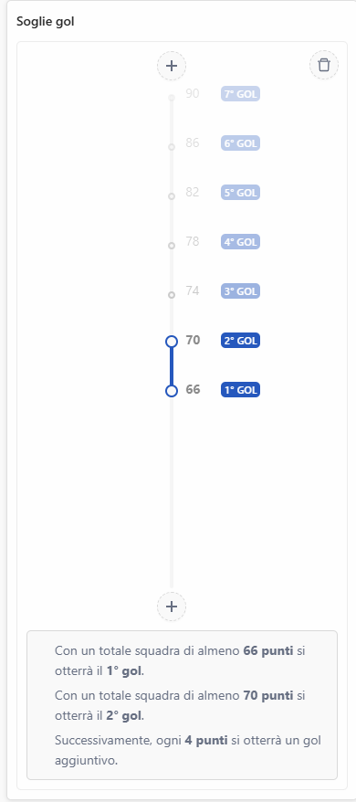
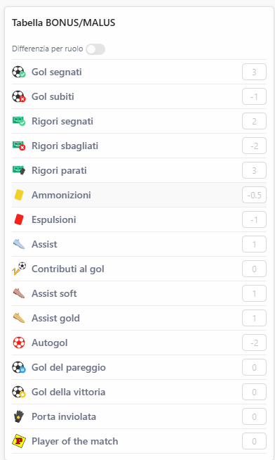

| Rev | Data | Descrizione |
|---|---|---|
| 00 | 08/06/2023 |
|
| 01 | 04/07/2023 |
|
| 02 | 07/10/2024 |
|
| 03 | 29/11/2024 |
|
| 04 | 31/07/2025 |
|
| 05 | 02/09/2025 |
Cambiamenti a seguito delle votazioni in data 29/08:
|
Due gironi da otto squadre, Serie A e Serie B.
Promozione: Prime tre posizione Serie B
Retrocessione: Ultime tre posizione Serie A
La calendarizzazione della coppa verrà effettuata in fase di creazione dei gironi.
La coppa prevede partite tra tutte le squadre indipendentemente dall'appartenenza alla Serie A o Serie B.
Tipo lega, disponibilità calciatori e crediti iniziali

Configurazione rosa e panchina

Numero e tipo sostituzioni

Soglie gol

Tabella bonus/malus
Partite rinviate < 3. Regola standard della lega: se le partite rinviate vengono recuperate oltre l'inizio del turno successivo si procederà ad assegnare 6 politico.
Nota su partite nel lasso di tempo tra un turno e il successivo
Partite rinviate ≥ 3. Si aspetterà che vengano regolarmente disputate "congelando" i voti fino al recupero delle partite stesse e calcolando al termine dell'ultimo recupero.
Il regolamento prevede per la definizione della regola 2 fattori + 1 condizione:
La soglia lavora come inibitore della penale → se e solo se viene superata la soglia si applicano le penali.
La multa verrà raccolta entro l'asta anno successivo → se non corrisposta impedirà l'iscrizione della squadra al campionato.
Il metodo è stato introdotto per risolvere tre problemi del metodo di vendita al valore di quotazione:
Il Metodo Osnaghi consiste nel liberare il giocatore a gennaio recuperando un numero di crediti calcolato applicando al valore di acquisto la medesima variazione percentuale che intercorre tra la Quotazione Iniziale Mantra e la Quotazione Attuale Mantra al momento della chiusura del mercato di riparazione della Serie A. Se il calcolo restituisce un numero con la virgola esso viene arrotondato all'intero superiore (se il calcolo dà 2,7 il valore sarà 3, se il risultato è 8,1 sarà 9) per favorire l'immissione in circolazione di crediti per finanziare l'asta ed evitare casistiche in cui il calcolo possa restituire il valore 0.
Lautaro viene acquistato per 120 crediti a settembre quando sul sito ha una Quotazione Iniziale Mantra di 40; purtroppo a ottobre incorre in un grave infortunio e la sua Quotazione Mantra Attuale risulta dimezzata a 20 il giorno 01/02 di chiusura del mercato di riparazione della Serie A. Liberandolo si riceverà il prezzo a cui è stato acquistato ma dimezzato, quindi 60.
Romano Floriani Mussolini viene pagato 1 a settembre quando sul sito ha Quotazione Iniziale Mantra pari a 3: le sue prestazioni nella prima parte di stagione sono ottime e alla chiusura del mercato di riparazione della Serie A la sua Quotazione Attuale Mantra è salita a 30, decuplicando. Liberandolo si guadagnerà esattamente dieci volte il prezzo a cui lo avete pagato a settembre, quindi 10 crediti.